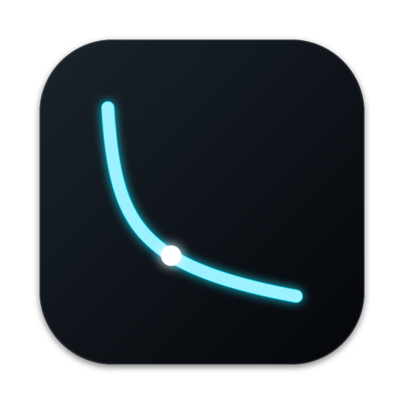
Spaced repetition for algorithm interview patterns. It trains recognition, not recall.
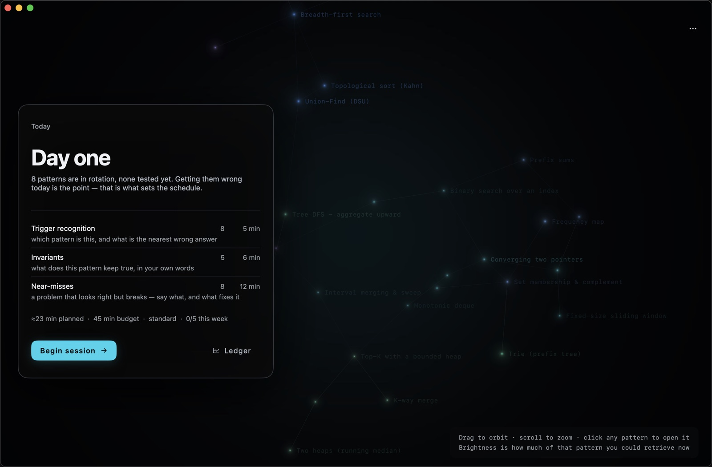
Grinding problems teaches you those problems. What an interview asks is whether you can see the structure in something you have never met — so that is what gets scheduled here.
Memory state attaches to a pattern and one facet of it — its trigger, its invariant, its nearest wrong answer. The problem in front of you is drawn fresh every time, so there is no puzzle to memorise.
An answer you had to reach for is what sets a useful interval. Easy recall teaches the scheduler almost nothing, which is why there is no accuracy score anywhere in the app.
Each session plans against a budget and closes itself at the line. Two rest days are part of the design — the counter measures weeks, never days.
The same forgetting-curve model behind modern spaced repetition, applied to patterns rather than cards.
One problem per session, phase-gated. The editor stays locked until the pattern and the complexity are committed in writing.
Watch the algorithm run — frontier, queue, invariant — generated by executing the real implementation, not drawn by hand.
Delayed recall over months, and a calibration table that checks whether the app's own grading predicts anything at all.
Every step below is generated by executing the real implementation — the frontier, the queue and the invariant are read out of a live run, not drawn by hand. This is breadth-first search, the same view the app opens when you click a pattern.
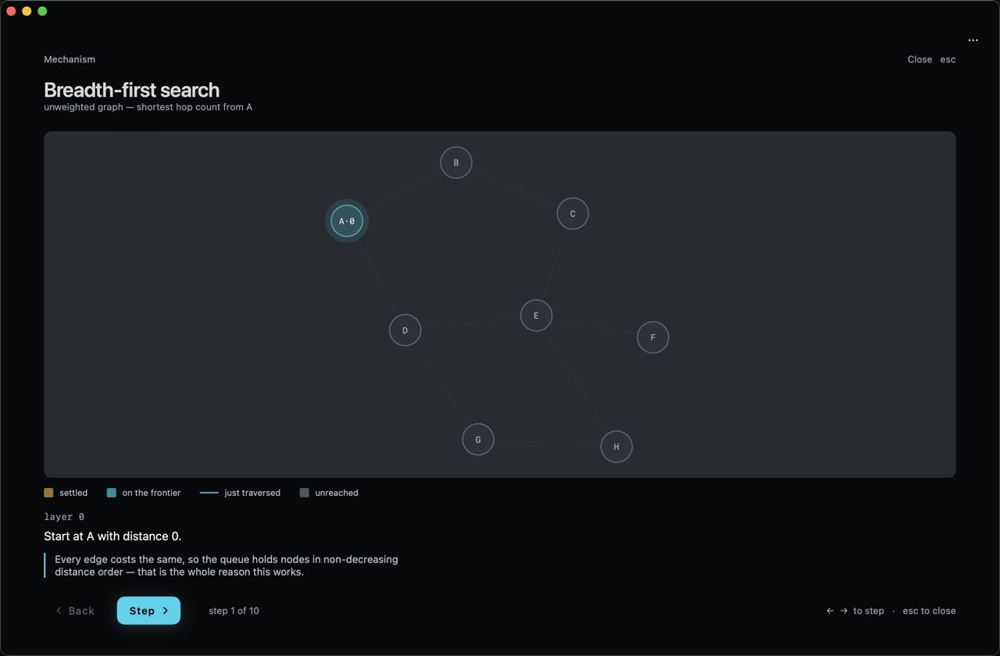
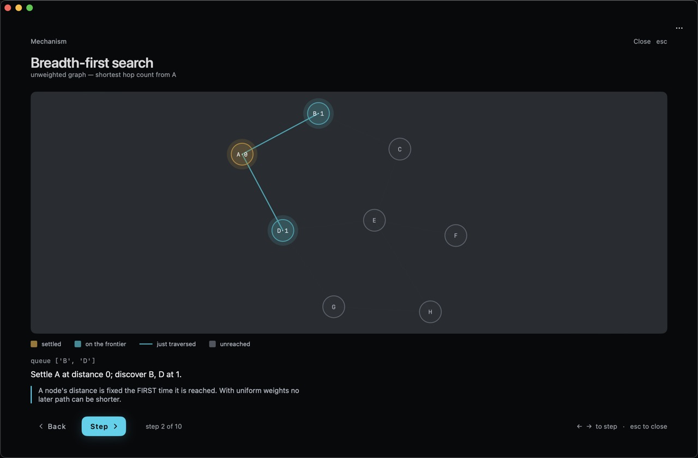
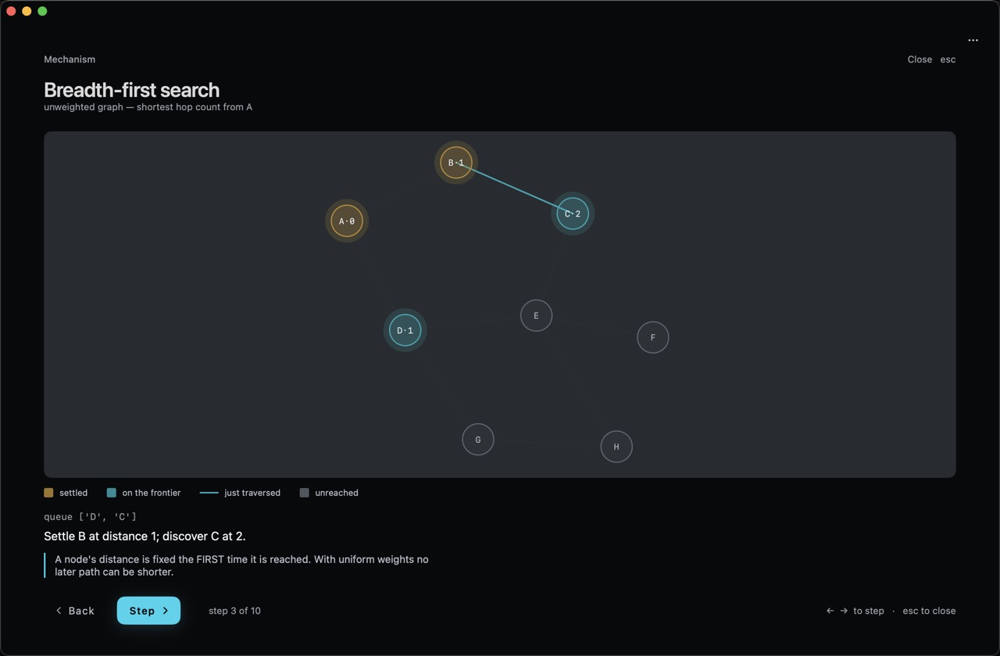
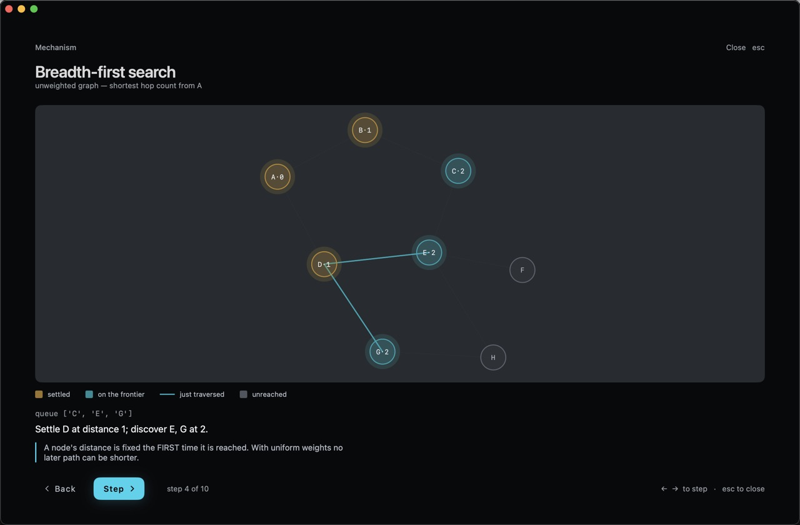
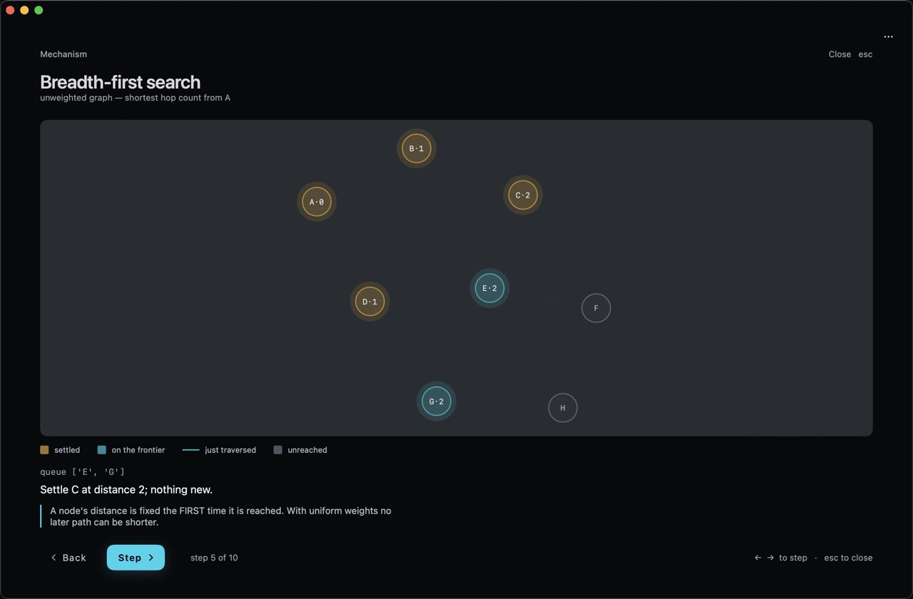
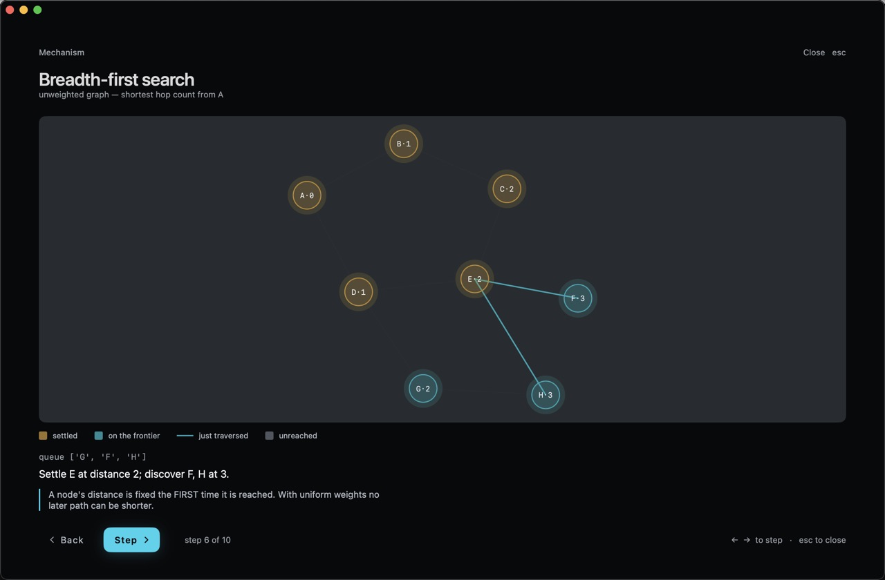
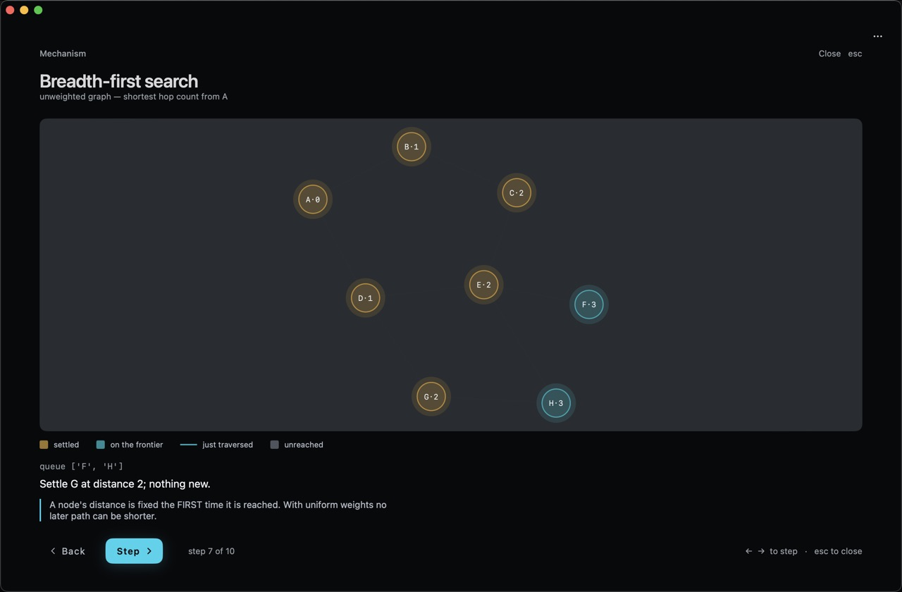
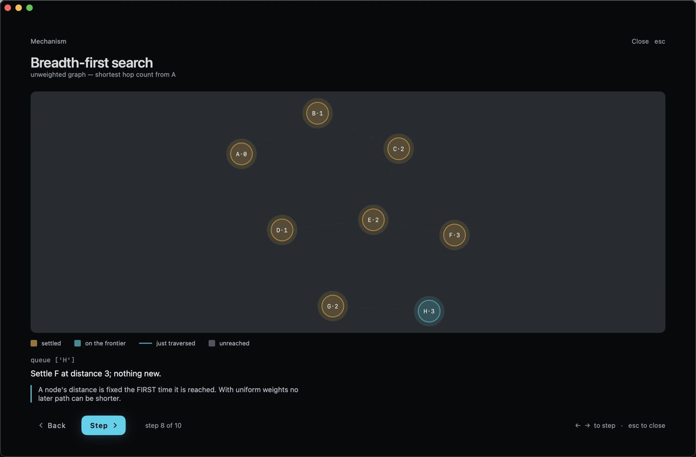
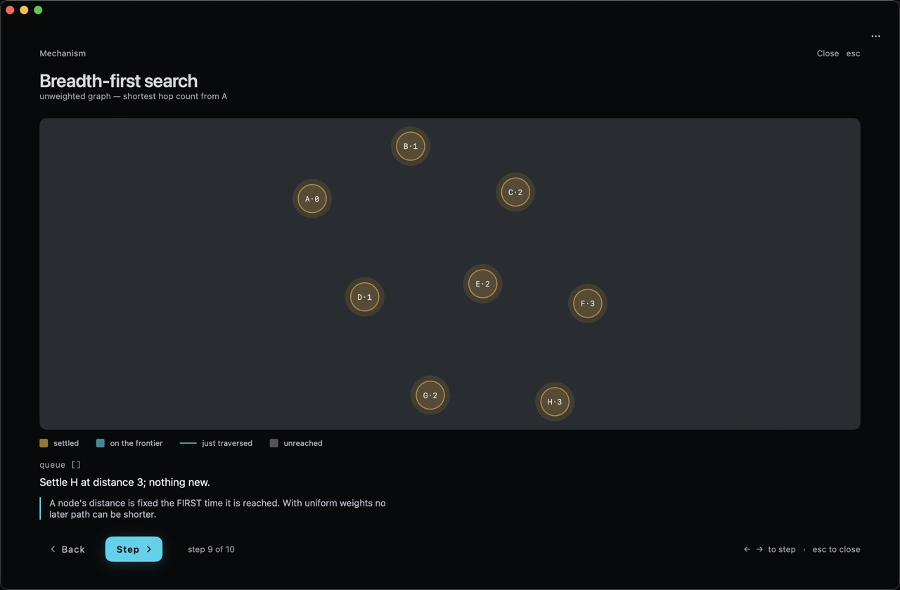
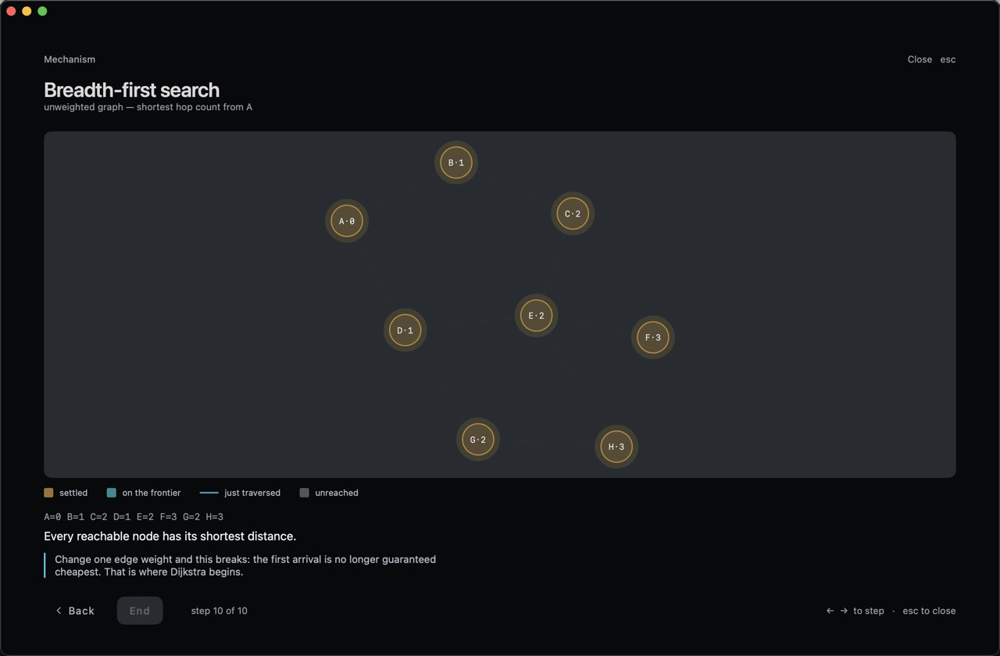
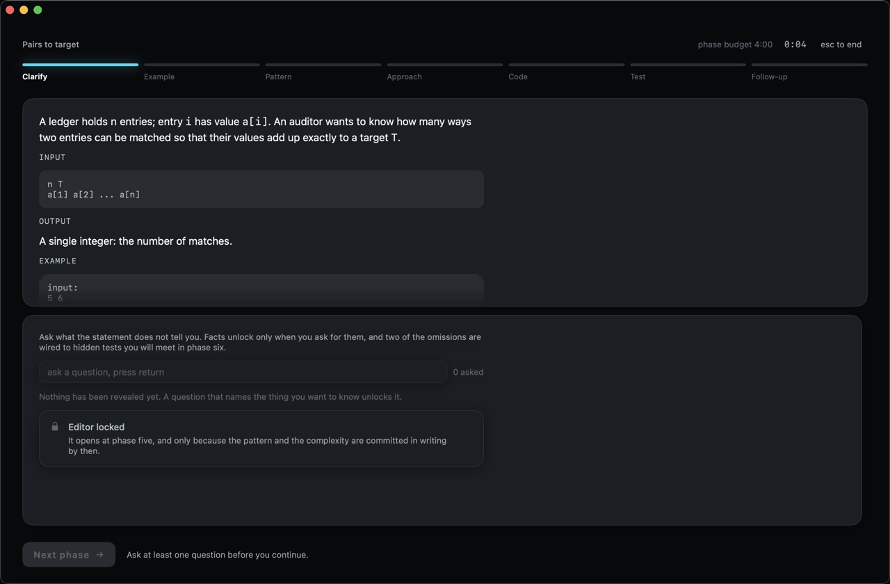
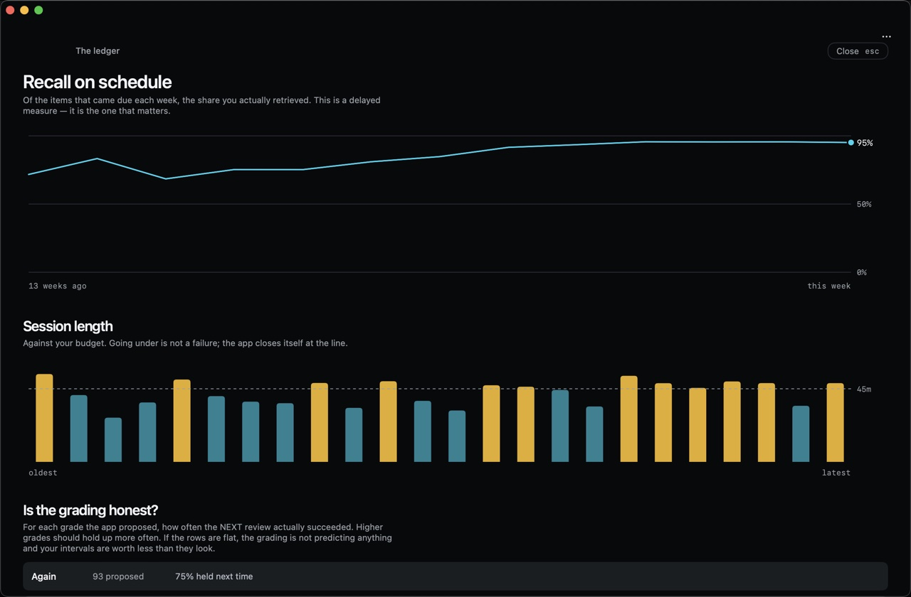
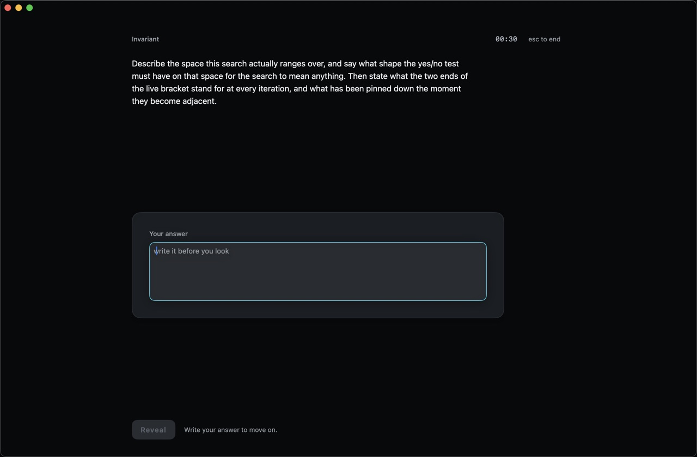
Eight patterns are in rotation. The map shows thirty-four — they are real entries and you can name them as rivals — but only eight currently carry review items, so only eight are scheduled. More are being written.
This is stated here for the same reason it is stated in the app: a trainer that advertises a library four times the size of the one it trains is not worth trusting about anything else.
Free, and everything stays on your Mac. If it is not for you, dragging it to the bin removes all of it.